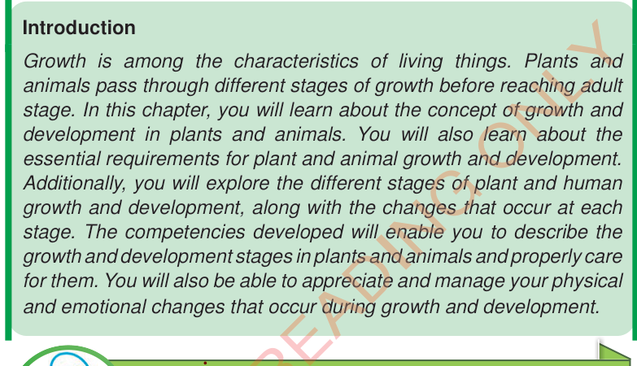
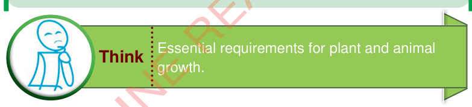
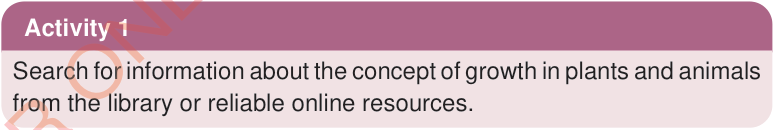

Chapter Two
Growth and development in plants and animals

Introduction
Growth is among the characteristics of living things. Plants and animals pass through different stages of growth before reaching adult stage. In this chapter, you will learn about the concept of growth and development in plants and animals. You will also learn about the essential requirements for plant and animal growth and development. Additionally, you will explore the different stages of plant and human growth and development, along with the changes that occur at each stage. The competencies developed will enable you to describe the growth and development stages in plants and animals and properly care for them. You will also be able to appreciate and manage your physical and emotional changes that occur during growth and development.

Concept of plant and animal growth and development

Growth in living things is the increase in body size (height and width) and weight. It is an irreversible change that occurs in plants and animals as a result of cell division, cell elongation and cell differentiation. Plant growth involves the increase in height of a plant, which occurs at the tips of roots and shoots. Also, plants grow by increasing the width or thickness of the plant stem. Like plants, animals also grow by increasing in height and weight. Plants and animals grow through different stages. The changes through which plants and animals undergo throughout their life cycle are called development. In plants, development involves germination, occurrence of new leaves, roots and other parts such as flowers, and